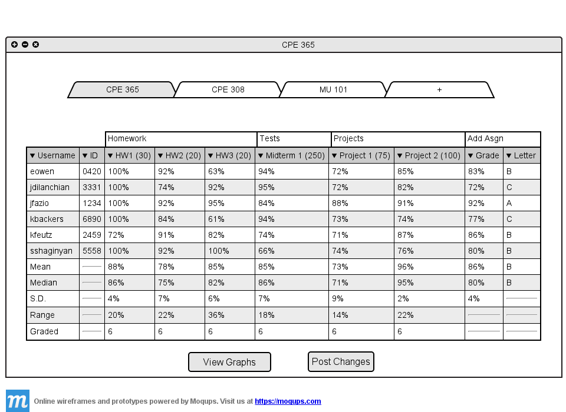
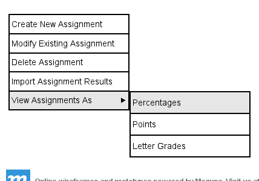
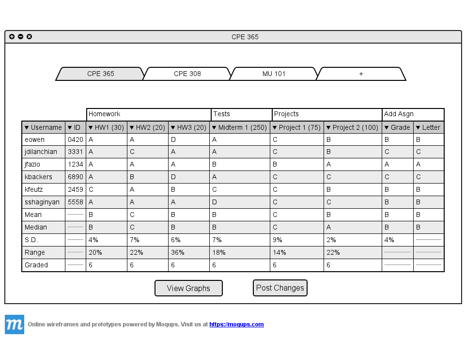

2.5.5 Viewing grades as different types
By default the spreadsheet shows the assignment grades as the percentages.

Figure 2.5.5 A: Default grade types.
If the teacher wishes to view all the grades as a different type (percentages, letter grades, or points) they can do so
from the drop down menu. The teacher goes to the menu, clicks on 'Assignments', hovers over 'View As' and
the following is displayed.

Figure 2.5.5 B: Default grade types.
The default option of the menu is 'Percentages' which displays the spreadsheet as seen in Figure 2.5.5 A.
The teacher has the option to show all grades as Letter Grades, Points, or Percentages. The teacher clicks on
'Letter Grades'.

Figure 2.5.5 C: Spreadsheet with letter grades.
The whole spreadsheet now displays letter grades instead of percentages. The standard deviation still
remains as a percent because it would not make sense to be displayed as a letter grade. The teacher now clicks on
'Points' from the menu in Figure 2.5.5 B.
Prev: Show Different Classes
| Next: View Stats on Spreadsheet
| Up: Using The Spreadsheet
| Top: index